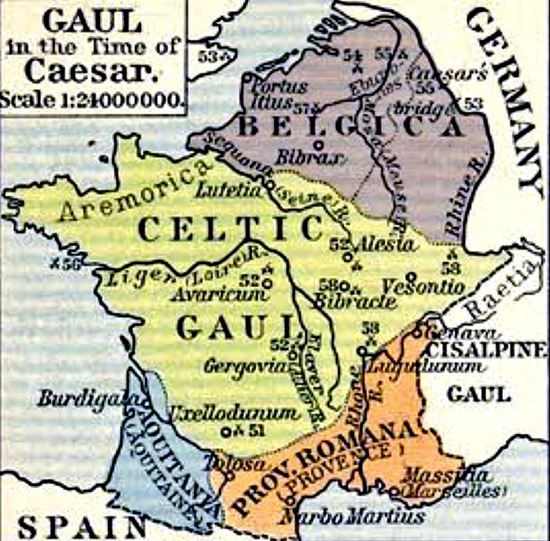
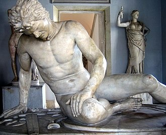
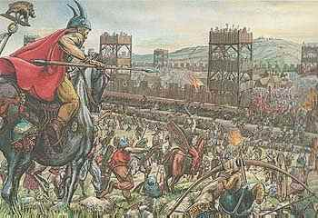

🇬🇧 English
French History
Home
Gaul
Topics
The Conquest of Gaul & The Battle of Alesia
Introduction

The Gallic Tribes
Caesar’s Motives

The Battle of Alesia (52 BCE)

Historical Impact
← Back to Home
Next Topic →